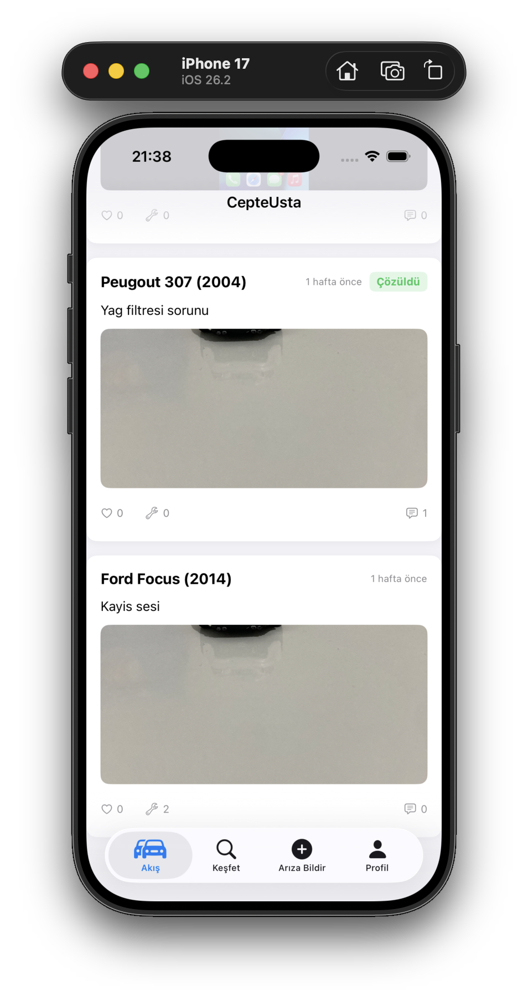
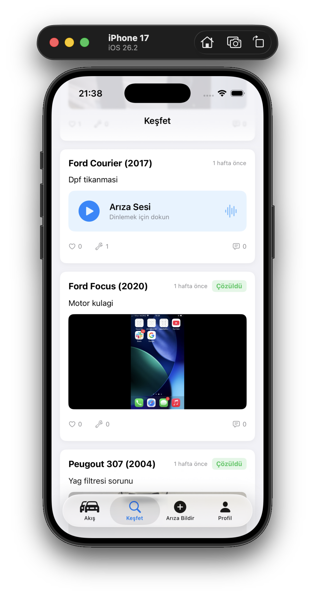
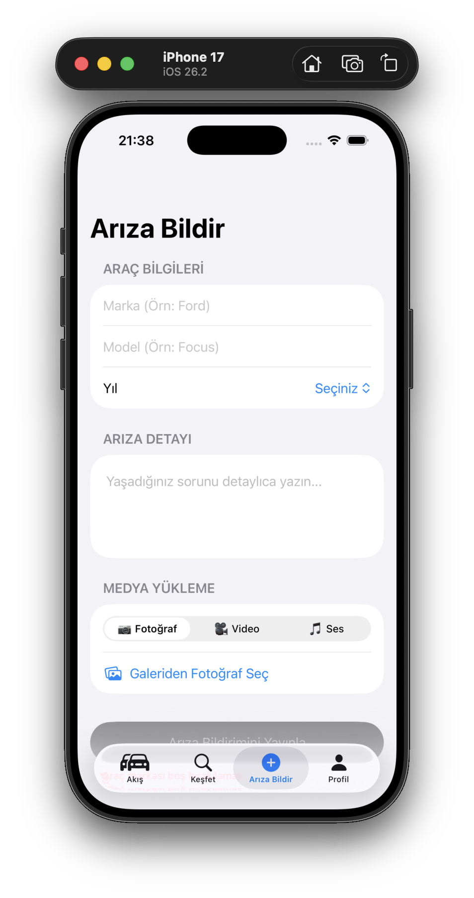
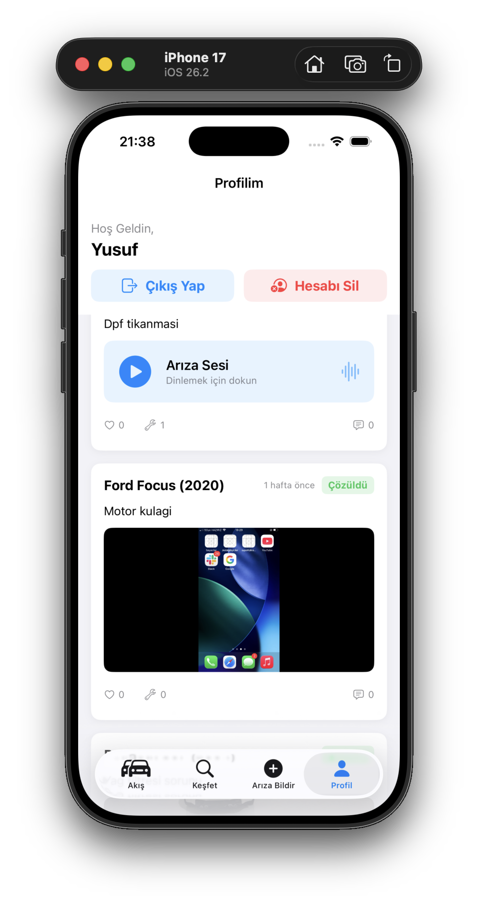

Araç ve Elektronik Arızalarında Yeni Nesil Çözüm Platformu
CepteUsta, kullanıcıların araçlarındaki veya elektronik cihazlarındaki arıza seslerini ve fotoğraflarını paylaştığı, ustalarla doğrudan iletişime geçebildiği iOS tabanlı bir mobil uygulamadır.



